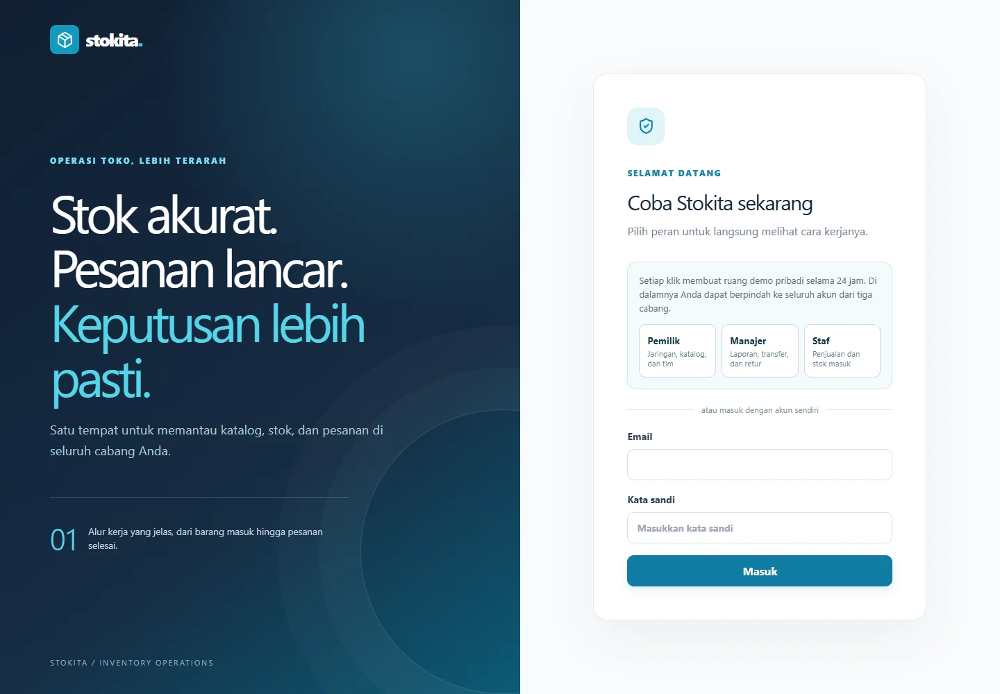
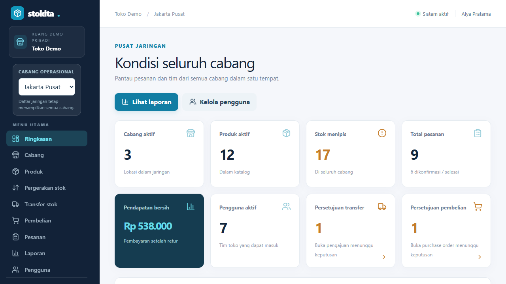
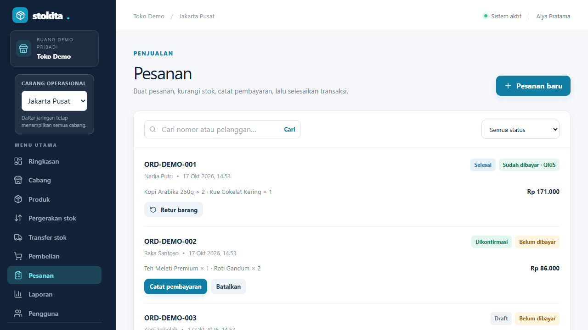

Keputusan teknis
React dan Vite menangani antarmuka; Express menyediakan API. Transaksi Serializable menjaga perubahan stok dan pesanan. Peran serta cabang ditentukan dari sesi server. ExcelJS menghasilkan laporan pusat dan cabang.
STUDI KASUS / RETAIL OPERATIONS · FULL STACK
Banyak cabang.
Satu kendali.
Operasional toko dalam satu tempat. Kelola stok per cabang, penjualan, transfer barang, pembelian, akses tim, dan laporan Excel.

01 / KONTEKS
Jaringan toko membutuhkan katalog yang konsisten, tetapi stok dan transaksi setiap cabang harus tetap terpisah. Pemilik dan tim cabang juga memiliki wewenang yang berbeda.
02 / PRODUK
Kelola katalog → catat stok cabang → konfirmasi pesanan dan reservasi stok → catat pembayaran → selesaikan transaksi. Transfer dan pembelian melewati persetujuan pemilik; laporan tersedia per cabang dan seluruh jaringan.

Pemilik melihat kondisi jaringan dan pengajuan yang membutuhkan keputusan.
Lihat gambar penuh ↗ (tab baru)
Pesanan dan statusnya dicatat dalam alur operasional cabang.
Lihat gambar penuh ↗ (tab baru)03 / DI BALIK LAYAR
React dan Vite menangani antarmuka; Express menyediakan API. Transaksi Serializable menjaga perubahan stok dan pesanan. Peran serta cabang ditentukan dari sesi server. ExcelJS menghasilkan laporan pusat dan cabang.
Demo menyediakan ruang terpisah untuk tiap pengunjung selama 24 jam. Metode pembayaran dicatat di aplikasi; tidak diklaim sebagai integrasi payment gateway.